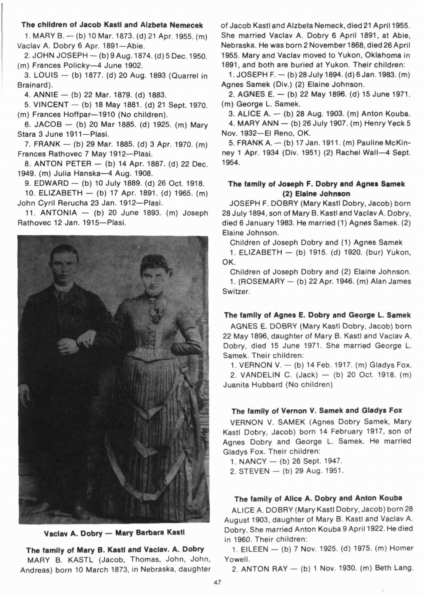

The book · The Family of Jacob Kastl
Page 47 The children of Jacob Kastl and Alzbeta Nemecek


Transcription
The children of Jacob Kastl and Alzbeta Nemecek
- MARY B. — (b) 10 Mar. 1873. (d) 21 Apr. 1955. (m) Vaclav A. Dobry 6 Apr. 1891—Abie.
- JOHN JOSEPH — (b) 9 Aug. 1874. (d) 5 Dec. 1950. (m) Frances Policky—4 June 1902.
- LOUIS — (b) 1877. (d) 20 Aug. 1893 (Quarrel in Brainard).
- ANNIE — (b) 22 Mar. 1879. (d) 1883.
- VINCENT — (b) 18 May 1881. (d) 21 Sept. 1970. (m) Frances Hoffpar—1910 (No children).
- JACOB — (b) 20 Mar 1885. (d) 1925. (m) Mary Stara 3 June 1911—Plasi.
- FRANK — (b) 29 Mar. 1885. (d) 3 Apr. 1970. (m) Frances Rathovec 7 May 1912—Plasi.
- ANTON PETER — (b) 14 Apr. 1887. (d) 22 Dec. 1949. (m) Julia Hanska—4 Aug. 1908.
- EDWARD — (b) 10 July 1889. (d) 26 Oct. 1918.
- ELIZABETH — (b) 17 Apr. 1891. (d) 1965. (m) John Cyril Rerucha 23 Jan. 1912—Plasi.
- ANTONIA — (b) 20 June 1893. (m) Joseph Rathovec 12 Jan. 1915—Plasi.

The family of Mary B. Kastl and Vaclav. A. Dobry
MARY B. KASTL (Jacob, Thomas, John, John, Andreas) born 10 March 1873, in Nebraska, daughter of Jacob Kastl and Alzbeta Nemeck, died 21 April 1955. She married Vaclav A. Dobry 6 April 1891, at Abie, Nebraska. He was born 2 November 1868, died 26 April 1955. Mary and Vaclav moved to Yukon, Oklahoma in 1891, and both are buried at Yukon. Their children:
- JOSEPH F. — (b) 28 July 1894. (d) 6 Jan. 1983. (m) Agnes Samek (Div.) (2) Elaine Johnson.
- AGNES E. — (b) 22 May 1896. (d) 15 June 1971. (m) George L. Samek.
- ALICE A. — (b) 28 Aug. 1903. (m) Anton Kouba.
- MARY ANN — (b) 26 July 1907. (m) Henry Yeck 5 Nov. 1932—El Reno, OK.
- FRANK A. — (b) 17 Jan. 1911. (m) Pauline McKinney 1 Apr. 1934 (Div. 1951) (2) Rachel Wall—4 Sept. 1954.
The family of Joseph F. Dobry and Agnes Samek (2) Elaine Johnson
JOSEPH F. DOBRY (Mary Kastl Dobry, Jacob) born 28 July 1894, son of Mary B. Kastl and Vaclav A. Dobry, died 6 January 1983. He married (1) Agnes Samek. (2) Elaine Johnson.
Children of Joseph Dobry and (1) Agnes Samek
- ELIZABETH — (b) 1915. (d) 1920. (bur) Yukon, OK.
Children of Joseph Dobry and (2) Elaine Johnson.
- (ROSEMARY — (b) 22 Apr. 1946. (m) Alan James Switzer.
The family of Agnes E. Dobry and George L. Samek
AGNES E. DOBRY (Mary Kastl Dobry, Jacob) born 22 May 1896, daughter of Mary B. Kastl and Vaclav A. Dobry, died 15 June 1971. She married George L. Samek. Their children:
- VERNON V. — (b) 14 Feb. 1917. (m) Gladys Fox.
- VANDELIN C. (Jack) — (b) 20 Oct. 1918. (m) Juanita Hubbard (No children)
The family of Vernon V. Samek and Gladys Fox
VERNON V. SAMEK (Agnes Dobry Samek, Mary Kastl Dobry, Jacob) born 14 February 1917, son of Agnes Dobry and George L. Samek. He married Gladys Fox. Their children:
- NANCY — (b) 26 Sept. 1947.
- STEVEN — (b) 29 Aug. 1951.
The family of Alice A. Dobry and Anton Kouba
ALICE A. DOBRY (Mary Kastl Dobry, Jacob) born 28 August 1903, daughter of Mary B. Kastl and Vaclav A. Dobry. She married Anton Kouba 9 April 1922. He died in 1960. Their children:
- EILEEN — (b) 7 Nov. 1925. (d) 1975. (m) Homer Yowell.
- ANTON RAY — (b) 1 Nov. 1930. (m) Beth Lang.
Transcriber’s notes
The Mary B. Kastl / Vaclav A. Dobry entry starts at the bottom of the left column and continues at the top of the right column. Printed as-is: 'Vaclav. A. Dobry' (extra period) in heading, 'Alzbeta Nemeck' (vs. Nemecek), Jacob b. '20 Mar 1885' and Frank b. '29 Mar. 1885' (same year), '1. (ROSEMARY' with stray opening parenthesis, 'Rathovec' (vs. 'Ratkovec' on p. 44). Faint vertical scan line in the upper left margin.